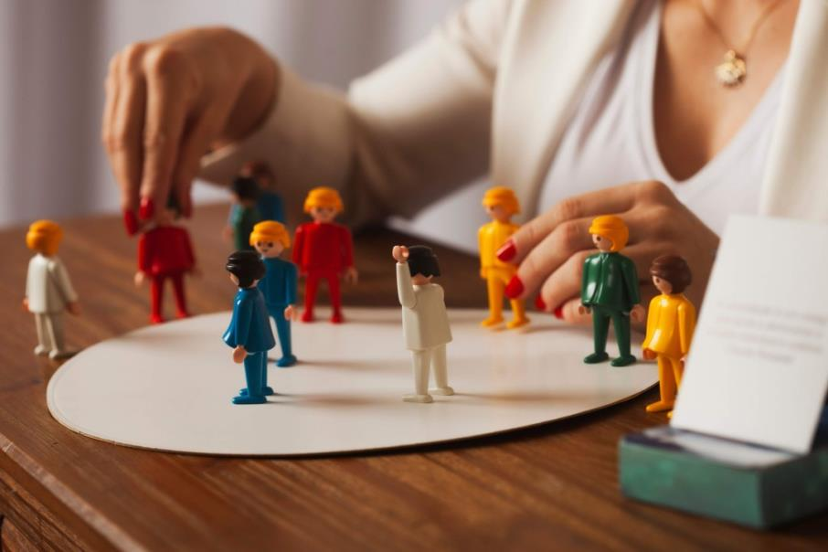
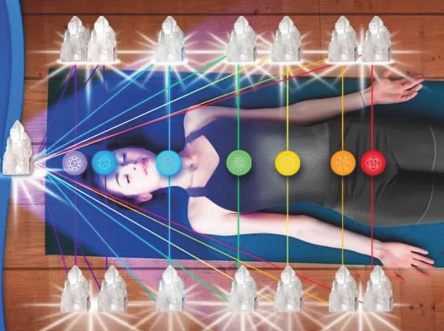
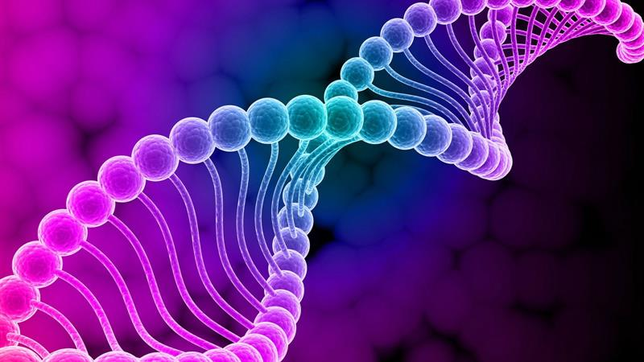

Mesa Radiônica é uma
terapia de reequilíbrio energético, que possibilita a
mudança do campo vibracional,
é possível usar essa ferramenta para tratar e harmonizar qualquer situação.
Através dela é aberto um portal energético, onde são ativadas diversas terapias indicadas pela da radiestesia,
ou seja, durante a mesa radiônica o cliente recebe várias terapias, o que traz uma imensa potência de
transformação.
Tags
Abertura de Caminhos
Manifestação
Cura Quântica
Proteção Espiritual
Constelação Familiar

O que é ?
A Constelação Familiar é uma terapia baseada na consciência sistêmica, capaz de abordar diversas questões. Ela é especialmente indicada para liberar padrões repetitivos e emaranhados que nos limitam ao longo da vida. Com essa abordagem, aprendemos a reconhecer nosso papel no mundo, caminhando com mais leveza.
Muitos problemas recorrentes, como escassez, doenças crônicas, dificuldades em relacionamentos, socialização, sucesso e realizações, estão frequentemente ligados ao nosso sistema familiar. As constelações ajudam a identificar e ressignificar esses vínculos, permitindo a liberação desses bloqueios e proporcionando mais liberdade para alcançar seus objetivos.
Focada na cura completa do ser e no processo de ascensão, essa terapia abrange vidas passadas, presentes, futuras e paralelas. Atua em pessoas ou situações para liberar bloqueios, realizar divórcios energéticos, desfazer magias e limpar maldições. O trabalho é feito em parceria com mestres ascensos, anjos e seres de luz, com efeitos que duram 28 dias após a sessão.
Tags
Ascensão Espiritual
Cura Energética
Limpeza Energética
Paz na Alma
Tameana

O que é ?
Transmitida pela Consciência Pleiadiana, essa terapia vibracional profunda alinha sua frequência para manifestar objetivos e metas. Ela promove expansão da consciência, harmoniza os chakras, reestrutura o DNA e alinha sua vibração com o campo eletromagnético da Terra, trazendo mais leveza e sincronia à vida.
Tags
Expansão de Consciência
Transformação Interior
Frequência Vibracional
Alinhamento de Chakras
Reiki
O que é ?
O Reiki é uma terapia energética que canaliza a energia universal para pessoas, animais, plantas, ambientes ou situações. Seus benefícios incluem redução do estresse, relaxamento, equilíbrio emocional, paz mental, restauração da energia vital, fortalecimento do sistema imunológico, além de promover felicidade, plenitude e bem-estar.
Essa terapia trata a agitação do ser e desconfortos como nervosismo, ansiedade, guerras internas, insônia e outros conflitos. Ela promove uma vida mais tranquila, alinhando suas energias internas em perfeito equilíbrio, levando você a um espaço de paz interior, calma e clareza. Pode ser aplicada em situações de conflito, trazendo paz e clareza para a solução, além de harmonizar sua energia e restaurar o equilíbrio.
Tags
Paz Interior
Equilíbrio Energético
Redução de Ansiedade
Cura de Conflitos Internos
Registros Akáshicos
O que é ?
Muitos dos bloqueios que enfrentamos hoje são originados de karmas e emaranhados do passado, seja nesta ou em outras vidas. Com a abertura dos Registros Akáshicos, é possível acessar a origem da energia que bloqueia uma questão específica e ressignificar esse momento, liberando as energias densas. Além disso, essa técnica promove uma grande expansão de consciência, ajudando a pessoa a entender e compreender melhor sua essência.
Tags
Libertação do Passado
Liberação de Karmas
Ressignificação Energética
Autoconhecimento
Thetahealing

O que é ?
Essa técnica é realizada por meio de conversas e visa eliminar crenças negativas e bloqueios, seja físicos ou energéticos, removendo as causas que impedem a felicidade e realização plena do cliente. Utilizando a onda Theta, que age instantaneamente, a técnica proporciona grandes mudanças de comportamento e padrões tóxicos já na primeira sessão, promovendo transformações e resultados incríveis. Pode ser aplicada para trabalhar qualquer questão.